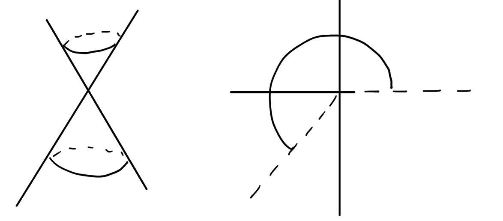

第 13 讲
章节：曲面的内蕴几何
在数学中定义一类对象之后，自然会希望在某种等价关系下对它们进行分类。引入对象的同时，也隐含地引入了对象之间的等价概念。
等距映射
定义
若存在微分同胚 \(f:S\to\widetilde S\)，它把 \(S\) 上的每条曲线映为 \(\widetilde S\) 上的等长曲线，则称 \(S\) 与 \(\widetilde S\) 等距，并称 \(f\) 为等距映射。
曲面的一个曲面片是局部坐标 \(X:U\to S\) 的像。
定理
曲面 \(S\) 与 \(\widetilde S\) 的两个曲面片等距，当且仅当它们可以分别参数化为
\[
\begin{aligned}
X&:U\to S,\\
\widetilde X&:U\to\widetilde S,
\end{aligned}
\]
并且两者的第一基本形式相同。
证明
证明。 若第一基本形式相同，则任意曲线在两个曲面片上的像具有相同长度，因此两个曲面片等距。
反过来，设 \(f:S\to\widetilde S\) 是等距映射。从覆盖 \(S\) 中曲面片的任意局部坐标 \(X:U\to S\) 出发，定义
\[
\widetilde X=f\circ X:U\to\widetilde S.
\]
因为 \(f\) 是等距映射，对 \(U\) 中任意曲线 \((u(t),v(t))\)，\(t\in[0,\varepsilon]\)，都有
\[
\int_0^{\varepsilon}\left(Eu'^2+2Fu'v'+Gv'^2\right)^{\frac12}dt
=\int_0^{\varepsilon}\left(\widetilde Eu'^2+2\widetilde Fu'v'+\widetilde Gv'^2\right)^{\frac12}dt.
\]
固定 \((u_0,v_0)\in U\)。沿坐标方向和对角方向分别取曲线，可得
\[
\begin{aligned}
(u_0+t,v_0)&: E(u_0,v_0)=\widetilde E(u_0,v_0),\\
(u_0,v_0+t)&: G(u_0,v_0)=\widetilde G(u_0,v_0),\\
(u_0+t,v_0+t)&: F(u_0,v_0)=\widetilde F(u_0,v_0).
\end{aligned}
\]
这里使用了
\[
\lim_{\varepsilon\to0}\frac{1}{\varepsilon}\int_0^\varepsilon h(t)dt=h(0).
\]
因此两曲面片的第一基本形式相同。\(\square\)
例子
-
平面的一部分与圆柱面的一部分等距。当然，整个平面与整个圆柱面并不等距；它们甚至不同胚。
-
考虑圆锥面
\[
C=\{(x,y,z)\in\mathbb{R}^3:x^2+y^2=z^2\}.
\]
对
\[
(u,v)\in(0,+\infty)\times(0,\sqrt2\pi),
\]
取
\[
X(u,v)=\left(\frac{u}{\sqrt2}\cos(v\sqrt2),\frac{u}{\sqrt2}\sin(v\sqrt2),\frac{u}{\sqrt2}\right),
\]
\[
\widetilde X(u,v)=(u\cos v,u\sin v,0).
\]
这两个参数化具有相同的第一基本形式。

图：圆锥面与平面区域的对应
保角与保面积参数化
第一基本形式中的角度信息
第一基本形式不仅度量切向量的长度，也度量切向量之间的角度。曲线长度由切向量的范数积分得到，而完整的第一基本形式还给出了不同方向之间的内积，因此包含更多信息。
定义
设 \(X:U\to S\) 是局部参数化。
-
若 \(X\) 保持相交曲线之间的角度，则称 \(X\) 为保角参数化。
-
若
\[
\operatorname{Area}(X(V))=\operatorname{Area}(V)
\]
对每个相对紧的 \(V\Subset U\) 都成立，则称 \(X\) 保持面积。
命题
-
\(X\) 保角当且仅当 \(E=G\) 且 \(F=0\)。
-
\(X\) 保持面积当且仅当 \(EG-F^2=1\)。
证明
证明。 对参数域中的两条曲线，其切向量夹角 \(\theta\) 满足
\[
\cos\theta=
\frac{u'\widetilde u'+v'\widetilde v'}
{\sqrt{u'^2+v'^2}\sqrt{\widetilde u'^2+\widetilde v'^2}}.
\]
两条像曲线的切向量为
\[
\xi=u'X_u+v'X_v,
\widetilde\xi=\widetilde u'X_u+\widetilde v'X_v,
\]
其夹角 \(\varphi\) 满足
\[
\cos\varphi=
\frac{u'\widetilde u'E+(u'\widetilde v'+v'\widetilde u')F+v'\widetilde v'G}
{\sqrt{u'^2E+2u'v'F+v'^2G}\sqrt{\widetilde u'^2E+2\widetilde u'\widetilde v'F+\widetilde v'^2G}}.
\]
先取两条坐标轴方向的曲线
\[
\begin{aligned}
(u(t),v(t))&=(t,0),\\
(\widetilde u(t),\widetilde v(t))&=(0,t).
\end{aligned}
\]
保角条件给出 \(F=0\)。再取方向分别为 \((1,1)\) 和 \((1,-1)\) 的两条曲线，即
\[
\begin{aligned}
(u(t),v(t))&=(t,t),\\
(\widetilde u(t),\widetilde v(t))&=(t,-t),
\end{aligned}
\]
便得到 \(E=G\)。反向结论可直接代入上式验证。
第二条结论由面积公式
\[
\operatorname{Area}(X(V))=\int_V\sqrt{EG-F^2}dudv
\]
立即得到。\(\square\)
例子：球极平面投影
单位球面的球极平面投影可写为保角参数化
\[
\pi:\mathbb{R}^2\to S^2,
\]
\[
(x,y)\longmapsto
\left(
\frac{2x}{1+x^2+y^2},
\frac{2y}{1+x^2+y^2},
\frac{-1+x^2+y^2}{1+x^2+y^2}
\right).
\]
平面的一部分与球面的一部分之间不存在等距映射。Gauss 通过曲面论中最重要的定理之一证明了这一点。
Gauss 绝妙定理
定理
Gauss 曲率在等距映射下保持不变。也就是说，若 \(f:S\to S'\) 是等距映射，\(K\) 与 \(K'\) 分别为两个曲面的 Gauss 曲率，则
\[
K(p)=K'(f(p))
\]
对所有 \(p\in S\) 都成立。
证明思路
取局部坐标 \(X:U\to S\)。Gauss 曲率最初由第一、第二基本形式共同表示为
\[
K=\frac{eg-f^2}{EG-F^2}.
\]
证明的策略是说明 \(eg-f^2\) 可以由 \(E,F,G\) 及其导数表示。这样，Gauss 曲率就只依赖第一基本形式；而等距曲面片具有相同的第一基本形式，所以它们具有相同的 Gauss 曲率。
对 \(\{X_u,X_v\}\) 进行正交归一化，得到 \(\{e_1,e_2\}\)。记
\[
e_{i,u}=\frac{\partial e_i}{\partial u},
e_{i,v}=\frac{\partial e_i}{\partial v}.
\]
则存在函数 \(\alpha_i,\lambda_i,\mu_i\)，使得
\[
\begin{aligned}
e_{1,u}&=\alpha_1e_2+\lambda_1N,\\
e_{1,v}&=\alpha_2e_2+\lambda_2N,\\
e_{2,u}&=-\alpha_1e_1+\mu_1N,\\
e_{2,v}&=-\alpha_2e_1+\mu_2N.
\end{aligned}
\]
这里利用了
\[
0=\langle e_1,e_2\rangle
\implies
\langle e_{1,u},e_2\rangle+\langle e_1,e_{2,u}\rangle=0.
\]
断言：
\[
\begin{aligned}
\langle e_{1,u},e_{2,v}\rangle-\langle e_{1,v},e_{2,u}\rangle
&=\lambda_1\mu_2-\lambda_2\mu_1\\
&=\frac{\partial\alpha_1}{\partial v}-\frac{\partial\alpha_2}{\partial u}\\
&=\frac{eg-f^2}{\sqrt{EG-F^2}}.
\end{aligned}
\]
对中间的等式，计算
\[
\begin{aligned}
\frac{\partial\alpha_1}{\partial v}-\frac{\partial\alpha_2}{\partial u}
&=-\frac{\partial}{\partial v}\langle e_{2,u},e_1\rangle
+\frac{\partial}{\partial u}\langle e_{2,v},e_1\rangle\\
&=-\langle e_{2,uv},e_1\rangle-\langle e_{2,u},e_{1,v}\rangle
+\langle e_{2,vu},e_1\rangle+\langle e_{2,v},e_{1,u}\rangle\\
&=\langle e_{1,u},e_{2,v}\rangle-\langle e_{1,v},e_{2,u}\rangle.
\end{aligned}
\]
另一方面，
\[
\begin{aligned}
\frac{eg-f^2}{\sqrt{EG-F^2}}
&=\langle N_u\times N_v,N\rangle\\
&=\langle N_u\times N_v,e_1\times e_2\rangle\\
&=\langle N_u,e_1\rangle\langle N_v,e_2\rangle
-\langle N_u,e_2\rangle\langle N_v,e_1\rangle\\
&=\langle N,e_{1,u}\rangle\langle N,e_{2,v}\rangle
-\langle N,e_{2,u}\rangle\langle N,e_{1,v}\rangle\\
&=\lambda_1\mu_2-\mu_1\lambda_2.
\end{aligned}
\]
只要进一步证明 \(\alpha_1\) 与 \(\alpha_2\) 可由第一基本形式决定，定理便得证。